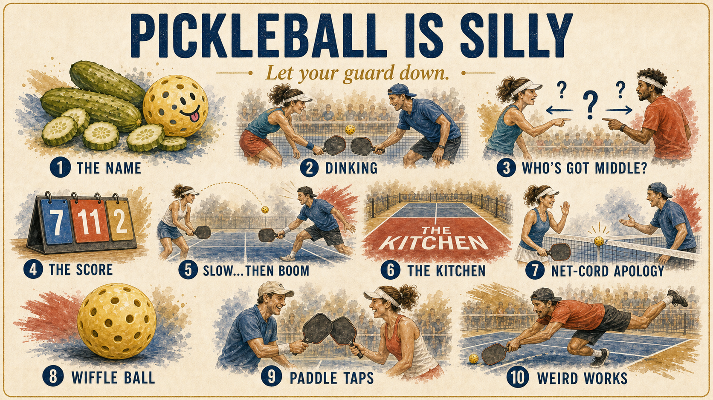
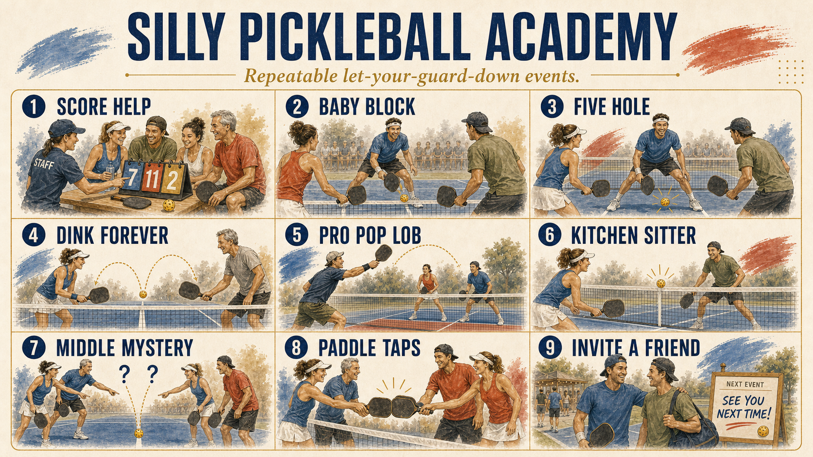

Players feel safe.
They are not judged for score confusion, weird form, easy misses, or beginner uncertainty.
Internal strategy
Value logic
Silly Pickleball is not a landing page idea. It is an internal operating strategy for defining and delivering the five-star experience for connection-first players: events lower-level players remember, trust, pay for, and refer into.
They are not judged for score confusion, weird form, easy misses, or beginner uncertainty.
They have a real moment with staff, pros, partners, and other players at their level.
The event becomes emotionally meaningful, not just another class on a calendar.
Five-star connection creates warm word of mouth, higher loyalty, and more willingness to pay.
Connection density
The measurable reason members stay, invite, and bring their lives back is connection density.
Members compare price, distance, open slots, ratings, and match quality.
Who fits. Who gives. Who is missed. Who needs the invite.
Members stay for the people and the Give n Receive community.
Market wedge
Competitive players care about ratings, brackets, and quality games. Connection-first players care about whether they feel welcome, whether the room is kind, and whether they have a reason to return.
Feel welcome
Look foolish
Silly is safe
Belong here
Bring friends
Community pulse
Staff goals and objectives
Every event should have three visible components: silliness, community, and open-hearted connection. If an event does not create those, it is just court usage.
Round matchups, clinic outline, welcome moment, and who should meet whom.
Lower-level socials, onboarding clinics, silly open-level events, upper-level silly events, and community clinics.
Pros and hosts must create and protect the room energy, not just teach the drill.
Front desk, staff, or GnR should capture post-event feedback: who felt welcome, who connected, who should be invited next.
Member referrals should flow into the right social, clinic, or onboarding event instead of getting lost.
Five-star connection-first player
No fear about level or making people mad.
Warm call, personal invite, real welcome.
Right level, right vibe, bridge players.
Music, intros, humor, owner and pro presence.
Generous players make improvement feel social.
Next event, lesson path, member path, referral.
Brand mechanism
The name, the score, the kitchen, the wiffle ball, the easy miss, and the paddle tap all tell players the same thing: nobody has to posture here.

Silly Pickleball Academy
The Academy should not teach players to become one-dimensional bangers who only chase the point. It should teach them to maximize Give n Receive: more connection, more value to partners, more range, more joy, and more ways to keep a group wanting to play together.
Reference: 4dpickleball.comPlayers become more fun to play with when they can hit soft and hard, defend and attack, reset and speed up, invite rallies and finish points. The teaching goal is range, not ego.
Teach pace without turning every rally into a banger contest.
Blocks, resets, baby blocks, and soft hands make play feel safer.
Players learn the transition skills that keep points alive and partners included.
Dinking becomes a connection skill: slow enough to talk, skilled enough to improve.
Pros show the playful high pop that lands in the kitchen and gives intermediates a finishable ball.
Teach the flashy sideline move as a fun curiosity, not a status test.
Use around-the-post examples to make advanced creativity feel learnable and joyful.
Curriculum build list
Mike Crosby wears safety eyewear while players hit hard from the opposite kitchen line, 14 feet away, and he baby blocks the ball calmly.
Film the safety-eyewear hard-hit demo, five-hole drill, and ball-machine out-ball game so players see that judgment and soft hands can beat big swings.
Mastering the Resets needs kitchen-line blast videos. Score Help needs score-confusion moments. Pro Plays In needs kitchen-lob clips.
How many times can players tap the ball up and over the net cord, including the silly Caleb-style version where they blow on it?
For each clinic: name the silly moment, film it, script how the pro introduces it, and define the next invitation it should create.
Mike Crosby for Baby Block, Ryann Foster Da Silva for Resets, Caleb Herrick for Net-Cord Game, Tina Lech for Score Help, Riley Stockwell for Pro Plays In, Greg Bennett for Dink Forever.
Product system
Make confusion normal. Staff helps players keep score so nobody feels exposed.
Use silly low-stakes drills to make newer players feel capable fast.
Pros create approachable moments: kitchen lobs, easy balls, playful resets, and confidence-building rallies.
Every good event ends with a prompt: who should be invited next, and by whom?
Operating model
The strategy cannot depend on one central planner guessing the vibe from a calendar. The event leader has to invite warmly, connect players, sell the next moment, sense the room, and teach with fun.
Make the player feel personally wanted before they arrive.
Introduce the right people and create low-pressure social bridges.
Turn a good moment into the next class, social, or friend invite.
Notice who is anxious, energized, lonely, ready, or misplaced.
Make instruction feel generous, social, and safe to fail inside.
Fill diagnosis and sales process
If it filled, do not just celebrate the number. Identify the source of demand: personal invite, trusted host, right level, right vibe, right promise, right timing, friend referral, or a format players already understand.
Name the actual reason. Who invited? What promise landed? Which players pulled others in?
Was the audience unclear, the trust too low, the level wrong, the benefit vague, or the invitation too cold?
Warm call, personal text, referral ask, bridge player, better title, better format, or a smaller first test.
Event-led learning
One center carries too many invitation and programming decisions. Fill rate becomes the proxy for quality, and feedback slows down.
Pros and community builders run small tests, sense the room, capture feedback, and productize the formats that create real connection.
Quality bar
Clean operations, clear scheduling, predictable formats, enough options, and fewer surprises make players feel safe showing up.
Pro-led flavor, silly moments, warm introductions, music, humor, and community energy make players feel something worth returning to.
Academy map
Classes are not just instruction. Each format is a social container that helps lower-level players feel progress, safety, and connection.

Operating KPI
The first five-star signal for social-first players.
The event created real human value, not just court usage.
Loyalty is the practical proof that the experience mattered.
Referral intent is the sales engine hiding inside the community experience.
The invitation graph gets smarter after every event.
Feedback turns each event into a better next event.
Internal strategy close